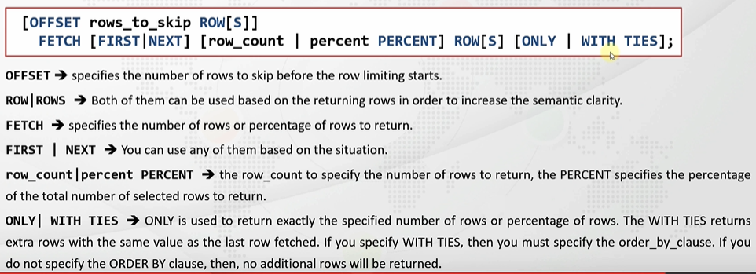
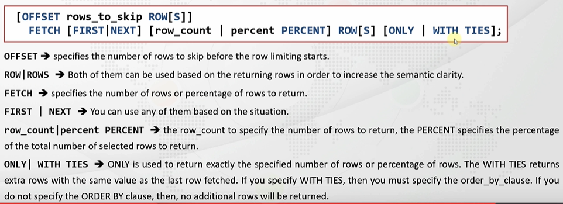

Index for Hibernate in Action book:
Chapter 1: Understanding Object/Relational Persistence
Udemy Oracle Lecture Series:
Section 1: Database Concepts
Section 2: Software Download and Installation
Section 3: Retrieving Data
Section 4: Restricting Data
Section 5: Sorting Data
Section 6: Using Substitution Variables
Section 7: Single-Row Functions
Section 8: Conversion Functions
Section 9: Conditional Expressions
Section 10: Group Functions
Section 11: Grouping Data
Chapter 1: Understanding Object/Relational Persistence
- Selection means which rows are to be returned.
- SO Link
https://stackoverflow.com/questions/10028214/add-foreign-key-to-existing-table
https://stackoverflow.com/questions/15076463/another-repeated-column-in-mapping-for-entity-error
https://stackoverflow.com/questions/19341838/why-do-we-use-embeddable-in-hibernate
https://stackoverflow.com/questions/42135114/how-does-spring-jpa-hibernate-ddl-auto-property-exactly-work-in-spring
https://stackoverflow.com/questions/47056384/jpa-entity-not-creating-table
https://www.baeldung.com/spring-boot-h2-database
https://stackoverflow.com/questions/970573/hibernate-error-cannot-resolve-table
Section1: Database Concepts
- Tables are considered as Entities and the logical relationships among different tables using keys is known as Entity-Relationships. You can depict these relationships in the form of a Entity-Relationship diagram (ER Diagram). Link to ER Diagram explanation here.
- Schema Objects are logical structures created by the Users. Following are some types of Schema Objects.
| Value | State |
|---|---|
| Table | A table is the base unit of the DB used to store data, formatted with columns and rows |
| View | A view is a virtual table that provides access to a subset of columns or some restricted rows from one or more tables. A view does not physically store any data in a new table. It is just a way to assign a name to a Stored SQL Query. |
| Constraints | Rules for restricting invalid data entry into tables |
| Index | Indexes are used for improving speed of data retrieval from tables. Indexes know physical addresses of data in disks and goes to these blocks directly. This improves the speed of data retrieval |
| Sequence | Database objects that generate unique integers |
| Synonym | Alias for a database object |
| Materialized View | A materialized view has a real table filled by an SQL query unlike the Views |
| Functions and Procedures | Functions return some values, procedures return nothing |
| Triggers | Triggers are compiled program units stored in the DB and executed with a specific event (event like INSERT, UPDATE...) |
| Packages | Packages are Schema Objects that are compiled and stored in the DB. They consist of PL/SQL code. |
| Database Links | Connections between two physical DB Servers |
- SO Link explaining the difference between a Schema and a User. This YT video also explains.
- HR Schema is a default schema that has been provided by Oracle for practice. This is what the HR Schema looks like. Refer this ER diagram link to understand what is going on here. This link explains what the recursive mapping on the Employees table means. The Crow's foot ER diagram representation is explained here.
- Look at the schema from the book: Beginning Oracle SQL for Oracle Database 12c. It contains explanation of a different ER Diagram that is also important. Course offerings without registrations are allowed. This is indicated in this type of diagram with a dotted line at the optional side of the relationship. The diagram shows two types of one-to-many relationships: three relationships are completely optional (indicated by all dashed lines) and the remaining ones are mandatory in one direction (indicated by the solid part of the line).
Section 2: Software Download and Installation
SQL statements used
- There are 4 types of SQL statements that are used: a) Data Manipulation Statements (DML): SELECT, INSERT, UPDATE, DELETE, MERGE
b) Data Definition Language (DDL): CREATE, ALTER, DROP, RENAME, TRUNCATE
c) Data Control Language (DCL): GRANT, REVOKE
d) Transaction Control Language (TCL): COMMIT, ROLLBACK, SAVEPOINT
Section 3: Retrieving Data
Oracle Datatypes
- Read about datatypes here.
| Data Type | Description |
|---|---|
| VARCHAR2(size) |
Stores variable length character data. size specifies the maximum length of the
string
that can be stored in this datatype. So if you have declared a column as VARCHAR(100), and
then
stored a string that contains only 10 characters, then only 10 bytes will be occupied in the
DB.
You can also specify the size as VARCHAR2(11 BYTE). The difference between the
two
kinds of definitions is explained here.
|
| CHAR(size) | Fixed-length character data. So if you declare a column as CHAR(100), and then store a string that contains only 10 characters, it will still occupy 100 bytes in the DB. Note that 1 char occupies 1 byte. Unlike Java, where 1 char has a size of 2 bytes. |
| NUMBER(p, s) |
Variable-length numeric data. p means precision, s means scale.
NUMBER(6,3) accepts 6 digits at all with 3 being after the decimal period.
This gives us only 3 digits possible before the period, and, hence, maximal value possible
to
store is 999.999 SO
Source
|
| DATE | Date and Time values |
| LONG | Variable length Character data. This link explains why you should use *LOB datatype instead of Long. Also read here |
| RAW and LONG RAW | Raw Binary Data. This is also not recommended. Use BLOB or BFILE instead |
| BLOB | BLOB stands for binary large object. You use the BLOB data type to store binary objects with the maximum size of (4 gigabytes - 1) * (database block size). Typically used for multimedia data such as images, audio, and video. |
| CLOB | CLOB stands for character large object. You use CLOB to store single-byte or multibyte characters with the maximum size is (4 gigabytes - 1) * (database block size). Used for large strings or documents that use the database character set exclusively. |
| BFILE | External Binary File. A binary file stored outside of the database in the host operating system file system, but accessible from database tables. BFILEs can be accessed from your application on a read-only basis. Use BFILEs to store static data, such as image data, that is not manipulated in applications. BFILE stores a pointer to the actual file somewhere in the operating system. |
| ROWID | A Base64 number representing the unique address of the row in a table. The ROWID uniquely identifies every row in the table. But the ROWID for a given record can change over the lifetime of a system, for instance through a table rebuild. Also if one record is deleted a new record could be given that ROWID. Consequently ROWIDs are not suitable for use as UIDs in the long term. But they are good enough for use within a transaction. Source. |
What is a NULL Value
- Null means unknown or non-existent
- Represented by
- NULL values are different than normal values in DBs. For instance, null values do not take up any space in the DB, unlike say an empty string, spaces, or a value of 0. If you are counting rows in a DB, the DB does not count the rows in which the value is NULL, because it does not consider that value to exist.
- Represented by
(null) on Oracle DBs. - NULL values are different than normal values in DBs. For instance, null values do not take up any space in the DB, unlike say an empty string, spaces, or a value of 0. If you are counting rows in a DB, the DB does not count the rows in which the value is NULL, because it does not consider that value to exist.
How to get information about the table
-
-
- You can get more details by highlighting the table name in the SQLDeveloper tool and then pressing
-
-
- The
-
DESCRIBE tableName -
DESC tableName - You can get more details by highlighting the table name in the SQLDeveloper tool and then pressing
Shift + F4 -
INFORMATION tableName -
INFO tableName - The
INFO command can print out useful information like Foreign Key constraints in the
table,
indexes, stored procedures, views etc used in the table. -
INFO+ tableName
SQL Statements Basics
- SQL statements are not case-sensitive
- SQL Commands can be terminated using a
- SQL Commands can be terminated using a
; or a /. If terminating using a
/, the / character should be on a new line. How to connect to SQLPlus
- In CommandPrompt, type:
-
- In SQLPlus, you have to terminate each statement with a mandatory
sqlplus hr/hr@//localhost:1521/orclpdb -
hr/hr is the username/password combo of your connection - In SQLPlus, you have to terminate each statement with a mandatory
; or a /
Using Column Aliases
- You can rename a column heading using column aliases:
- Add the
- It can also be used to change names for computations. So instead of doing this:
- Aliases are used with double quotation marks if our alias name contains spaces, special characters, or it is used for handling case-sensitivity.
SELECT first_name name, last_name surname FROM employees; - Add the
AS keyword to increase readability:
SELECT first_name AS name, last_name AS surname FROM employees; - It can also be used to change names for computations. So instead of doing this:
SELECT employee_id, salary + NVL(salary * commission_pct, 0), salary, commission_pct
FROM employees; you can do this: SELECT employee_id, salary + NVL(salary * commission_pct, 0)
AS modified_salary, salary, commission_pct FROM employees; - Aliases are used with double quotation marks if our alias name contains spaces, special characters, or it is used for handling case-sensitivity.
SELECT employee_id, salary + NVL(salary * commission_pct, 0)
AS "New Salary", salary, commission_pct FROM employees;
Using Quote Operator
- If you want to use the
' character in your column names, you need to use the Quote
operator
Expand Gist 
DISTINCT and UNIQUE Operators
- Used to count the number of rows that contains unique data.
- DISTINCT and UNIUE are the same. DISTINCT is the new version of UNIQUE. Prefer DISTINCT.
- DISTINCT and UNIUE are the same. DISTINCT is the new version of UNIQUE. Prefer DISTINCT.
Expand Gist
Concatenation Operators
- Used to concatenate two or more strings or columns and returns them as a single column output value
- Concatenate 2 or more strings by using
- Concatenate 2 or more strings by using
|| operator
Expand Gist
Arithmetic Operators
- Arithmetic operations performed with
NULL values returns NULL.
Expand Gist
Section 4: Restricting Data
Using WHERE clause
-
a) Comparison operators like (=, <, >, <=, >=, <>, !=)
b)
c) Logical operators:
WHERE clause is used with: a) Comparison operators like (=, <, >, <=, >=, <>, !=)
b)
BETWEEN ... AND, IN, LIKE, and IS NULL c) Logical operators:
AND, OR, NOT
Using Comparison Operators
Expand Gist
BETWEEN ... AND Operator
- Retrieves data between the specified upper limit and lower limit. The lower and the upper limits are
included.
Expand Gist
IN Operator
- The
- Just like the
- The
IN operator is used to retrieve the restricted values in the specified list. - Just like the
BETWEEN ... AND operators, data types like the NUMBER, CHARACTER, DATE can
be used in the IN clause. - The
IN operator performs a sort on the column before returning the rows if the column has
an Index on it.
Expand Gist
LIKE Operator
- The
a)
b)
LIKE operator is used to perform wildcard searchesan retrieve rows matching a certain
character pattern: a)
% (Percentage): matches any number of characters. So "SA%" would match SA, SAD, SADE,
SADER, and so on b)
_ (Underscore): matches exactly one character. So "SA_" would match exactly SAD only.
Expand Gist
IS NULL Operator
Expand Gist
Logical operators: AND, OR, NOT
- AND Operator's truth table:
- In
- OR Operator's truth table:
| AND | TRUE | FALSE | NULL |
|---|---|---|---|
| TRUE | TRUE | FALSE | NULL |
| FALSE | FALSE | FALSE | FALSE |
| NULL | NULL | FALSE | NULL |
AND operator, if one side is FALSE, it will not return the related row. - OR Operator's truth table:
| OR | TRUE | FALSE | NULL |
|---|---|---|---|
| TRUE | TRUE | TRUE | TRUE |
| FALSE | TRUE | FALSE | NULL |
| NULL | TRUE | NULL | NULL |
Expand Gist
Rules of precedence
- the order of preference for SQL operators is as follows:
Section 5: Sorting Data
ORDER BY Clause
- The default ordering is ascending.
-
-
ORDER BY is always the last clause in a query.
Expand Gist
ASC and DESC Operators
Expand Gist
NULLS FIRST and NULLS LAST Operators
- The NULLS FIRST or NULLS LAST operators are used for changing the order of
the NULL values.
Expand Gist
ROWNUM and ROWID
-
-
- Read ROWNUM docs on Oracle here. It contains important information.
- Conditions testing for ROWNUM values greater than a positive integer are always false.
- This SO Post talks about how to do pagination in Oracle.
ROWID is the unique identifier that contains the physical address of the row. Oracle
automatically generates the ROWID at the time of insertion of the row. Hence a
ROWID uniquely identifies where the ROW resides on the disk. It contains information
identifying the Disc Number, Cylinder, Block Number and Block Offset. No idea what any of this means.
The fastest way to access a ROW is using it's ROWID. Modification of a row does not change
it's ROWID. But if you delete the row and then add it back again, even if it has the same
data as previous, it might be assigned a new ROWID. Read here for
more info. Read more about ROWID here
on Oracle Docs.
-
ROWNUM is the consecutive logical sequence number given to the rows fetched from the
table. To limit the returning rows in a table, you can use the ROWNUM pseudo column. - Read ROWNUM docs on Oracle here. It contains important information.
- Conditions testing for ROWNUM values greater than a positive integer are always false.
- This SO Post talks about how to do pagination in Oracle.
Expand Gist
FETCH Clause
- The

FETCH clause is used along with the SELECT and ORDER BY
clause to limit the number of rows and retrieve a portion of the returning rows. 
Expand Gist
Section 6: Using Substitution Variables
What is a Substitution Variable
- The substitution variables are placeholders in an SQL script where you want to substitute some values
at runtime.
- Note that substitution variables are not a feature of the SQL language itself, but rather a feature of the SQL Developer and the SQLPlus tools.
- Note that substitution variables are not a feature of the SQL language itself, but rather a feature of the SQL Developer and the SQLPlus tools.
Expand Gist
Double Ampersand (&&), DEFINE, and UNDEFINE Commands
- Using
- Using
- So how do we change the values once they have been assigned?
-
& does not store the value of the substitution variable - Using
&& stores the value of the substitution variable. The value associated with that
particular substitution variable will be stored for the entire duration of the connection. - So how do we change the values once they have been assigned?
-
DEFINE and UNDEFINE variables allow us to do it. These commands can be
abbreviated as DEF and UNDEF respectively.
Expand Gist
ACCEPT and PROMPT Commands
- Used to get input from the user
- //TODO
- //TODO
SET VERIFY ON / SET VERIFY OFF Commands
- The
VERIFY command displays the status of the substitution variable before and after the
substitution.
- DEFINE variable was also discussed.
- //TODO
Section 7: Single-Row Functions
Single-Row Functions
- When you create a function it is compiled and stored in the database, hence functions are also
referred to as "Stored Functions".
- In Oracle DB there are 2 types of functions:
a) Single-Row Functions: takes a single row as an input and returns a single result (row)
b) Multi-Row Functions: takes multiple rows as input and outputs single row. They are also sometimes referred to as Group Functions.
- If we use a Single-row function for querying the whole table, the function will be called for each row
of the table and return a single value for each row.
- Single-row functions can be nested.
- We can use the Single-row functions in
- In Oracle DB there are 2 types of functions:
a) Single-Row Functions: takes a single row as an input and returns a single result (row)
b) Multi-Row Functions: takes multiple rows as input and outputs single row. They are also sometimes referred to as Group Functions.
- Single-row functions can be nested.
- We can use the Single-row functions in
SELECT, WHERE, and
ORDER BY clauses.
Character Functions
- SQL functions get their names from the type of the arguments that they accept.
- Character functions are of two types:
a) Case Conversion Functions:
1)
2)
3)
- Example of using case-conversion functions:
- Character functions are of two types:
a) Case Conversion Functions:
1)
UPPER: converts all input characters to lower case 2)
LOWER: converts all input characters to upper case3)
INITCAP: converts the first letter of each word to upper case and the remaining letters
to lower case - Example of using case-conversion functions:
Expand Gist
Character Manipulation Functions
- Note that index positions start from 1 and not 0 in Oracle.
- Spaces are also counted as valid characters
- Character Manipulation Functions are:
1)
2)
3)
4)
5)
6)
6)
7)
-
- Spaces are also counted as valid characters
- Character Manipulation Functions are:
1)
SUBSTR: if the length parameter is not specified, the function returns the
substring from the start position righ up till the end of the string.2)
LENGTH 3)
CONCAT 4)
INSTR: position is a non-zero integer value that specifies from which position
the
function should start the search. If position is positive, the INSTR function starts counting
from the start of the string, and if the position is negative, it starts counting from the end of
the string. The occurrence specifies which occurence of the substring it should consider. 5)
TRIM: Note that the TRIM functions takes in a trim_character as
args, that means you cannot pass in a string. 6)
LTRIM, RTRIM: On the other hand, these take in trim_string as
arguments, hence you can pass in Strings as args. 6)
REPLACE 7)
LPAD, RPAD -
Expand Gist
Numeric Functions
- They take in numeric values as input, and return numeric values as output.
- Some examples are:
- Some examples are:
ROUND, TRUNC, CEIL, FLOOR,
MOD
Expand Gist
Date values and Date Formats
- OracleDB stores date values in an internal numeric format. it stores a 7-byte number that contains the
century, year, month, day, hour, minute, and second.
- You can change the default way in which Oracle shows dates by going to: Tools -> Preference ->
Database -> NLS
- The default setting is:
- Refer this point in Udemy lecture to see how dates work.
- Something about representation differences between DD-MON-RR and DD-MM-YY:
- The data types used to store date in Oracle are:
a)
b)
c)
d)
- The default setting is:
DD-MON-RR in the DB. - Refer this point in Udemy lecture to see how dates work.
- Something about representation differences between DD-MON-RR and DD-MM-YY:
a)
DATE: stores year, month, day, hour, minute, seconds b)
TIMESTAMP: stores year, month, day, hour, minute, seconds, and fractional seconds
c)
TIMESTAMP WITH TIME ZONE: stores TIMESTAMP along with the timezone (+2:00,
-3:00, etc.) Note that the timezone that is stored is the time zone location where your database is, and
not where you are running the commandd)
TIMESTAMP WITH LOCAL TIME ZONE: the timezone information if from where the user
executes the query, and not where the database is.
Date Functions and Arithmetic Functions on dates
-
-
-
-
-
- We can add or subtract a number from a date, and the result of this operation will also be a date. For eg. if you add 2 to a
- Apart from this, Oracle also provides some standard functions to perform arithmetic operations on
dates.
https://stackoverflow.com/questions/6027961/ora-00904-invalid-identifier
SYSDATE: returns the current date and time of the OS where the DB is installed -
CURRENT_DATE: returns the current date and time of the place where the user's session is
logged in from -
SESSIONTIMEZONE: returns the time zone of the user's session -
SYSTIMESTAMP: returns the date and time of the DB -
CURRENT_TIMESTAMP: returns current date and time from the user's session - We can add or subtract a number from a date, and the result of this operation will also be a date. For eg. if you add 2 to a
sysdate, the output would be two days after the sysdate.
Expand Gist
Expand Gist
Section 8: Conversion Functions
Conversion Functions
- Oracle conversion functions convert one data type into another. There are two types of conversion:
a) Implicit Conversion: not recommended
b) Explicit Conversion
- This point in udemy lecture explains how implicit conversion works in Oracle DB.
- Following data types can be implicitly converted in Oracle:
- There are 3 functions for explicit data type conversion:
a) Implicit Conversion: not recommended
b) Explicit Conversion
- This point in udemy lecture explains how implicit conversion works in Oracle DB.
- Following data types can be implicitly converted in Oracle:
Expand Gist
TO_CHAR, TO_DATE, TO_NUMBER
a)
-
- First: Converting a
- There are a number of ways in which you can format a DATE type in Oracle. This table specifies the different formats that the input value can be converted into.
- The examples for the below can be seen here on Udemy.
- Some example are shown as follows:
- Second: Converting a
- These are the ways that you can format the
- Below are some examples on how to use the
b)
- This is used to convert a text to a number value. You can think of it as the reverse of the
- The same formatting rules that apply to conversion from
- Some exmaples of using the
c)
- This converts
- Here is one example:
TO_CHAR function: -
TO_CHAR can convert CHARACTER type to DATE type. The below
examples show the different ways in which you can format them. - First: Converting a
DATE type to VARCHAR2 datatype in the
specified format model. - There are a number of ways in which you can format a DATE type in Oracle. This table specifies the different formats that the input value can be converted into.
- The examples for the below can be seen here on Udemy.
Expand Gist
NUMBER type to VARCHAR2 datatype in the
specified format model. - These are the ways that you can format the
NUMBER datatype:
TO_CHAR function to format numbers.
Expand Gist
b)
TO_NUMBER function: - This is used to convert a text to a number value. You can think of it as the reverse of the
TO_CHAR
function. - The same formatting rules that apply to conversion from
NUMBER to VARCHAR2
also apply to the vice-versa conversion. - Some exmaples of using the
TO_NUMBER:
Expand Gist
c)
TO_DATE function: - This converts
VARCHAR2 type to a DATE format. - Here is one example:
Expand Gist
Null-Related (NVL, NVL2, NULLIF, COALESCE) Functions
- The
- The syntax of using the function is:
- The
- It's syntax is:
- The syntax of the
- The
- The syntax of using the function is
NVL function allows us to replace a NULL value with a meaningful alternative. - The syntax of using the function is:
NVL(expression1, expression2). If the
expression1 evaluates to NULL, it returns the expression2. Else it returns the expression1.
Both, expression1 and expression2 must have the same datatype. - The
NVL2 function builds up on the functionality of NVL. - It's syntax is:
NVL2(expression1, expression2, expression3). If the expression1 is
NOT NULL, then it returns expression2. If the expression1 IS NULL, then it returns expression3.
The expression1 does not have to be the same datatype as expression2 and
expression3. BUT the datatypes of expression2 and expression3 must be the same.
- The syntax of the
NULLIF function is NULLIF(expression1, expression2). If
the expression1 and expression2 are equal, then the function returns NULL. BUT if they are
NOT equal, then it returns the expression1. The expression1 and expression2 must be
the same datatype. - The
COALESCE function accepts a list of arguments and returns the first one that
evaluates to a non-null value. - The syntax of using the function is
COALESCE(expression1, ..., expressionN). It accepts
at least 2 parameters. Starting form the leftmost arg, it will return the first Non-Null value that it
finds. If all the expressions are null, it will return NULL. To prevent that, you can always write a
static non-null value as the last argument though. And all the expressions should be in the same
datatype.
Expand Gist
Section 9: Conditional Expressions
CASE Expressions
-
- The syntax of the expression looks like this:
- The expression and comparison_expression should have the same datatype. The datatype of
the result can be different than the datatype of the expression/comparison_expression. But all
the result should have the same datatype.
- The
 - Note that in the case of the Searched Case Expression, we can make use of different conditions in the
- Note that in the case of the Searched Case Expression, we can make use of different conditions in the
- Also note that
CASE ... WHEN expressions allow us to specify IF-THEN-ELSE logic in SQL code. - The syntax of the expression looks like this:
- The
CASE ... WHEN expressions can be used in two ways: Simple Case Expression and
Searched Case Expression
WHEN block - basically we can use ANY expression that returns a boolean value. - Also note that
CASE ... WHEN expressions can be used either in the SELECT
clause, or in the WHERE clause.
Expand Gist
DECODE Function
-
DECODE is specific to OracleDBs and is an alternative to CASE expressions.
Also note that CASE is an expression whereas DECODE is a function.
Expand Gist
Section 10: Group Functions
Group Functions
- Recall from the previous section that there are two types of functions in Oracle SQL: Single-row and
Multiple-row functions. Group functions allows us to get one result from multiple rows of data.
- Remember that Group functions ignore the NULL values.
- The
- Remember that Group functions ignore the NULL values.
- The
DISTINCT and ALL keywords are used with the group functions to consider
or ignore the duplicate values. The default is ALL.
AVG Function
- Used for getting the average value of the columns or expressions.
Expand Gist
COUNT Function
- Returns the number of rows returned by a query.
- We can use the
- You can use
- We can use the
DISTINCT keyword to count the distinct values of the expression, or ALL
keyword to count all the rows. - You can use
COUNT(*) to count all the rows including the duplicates and the NULL values.
Expand Gist
MAX and MIN Function
- Returns the maximum value of the column or expression that it is provided with.
- This can be used with
- It makes no sense to use
- This can be used with
NUMERIC, DATE, and VARCHAR2 datatypes.
- It makes no sense to use
DISTINCT or ALL keywords when using these Group
Functions.
SUM Function
- Used for getting the sum of the column or expression.
- The
- The
ALL and DISTINCT keywords can be used to handle duplicate values.
Expand Gist
LISTAGG Function
- TODO
Section 11: Grouping Data
GROUP BY Clause
- As we have discussed previously, Group functions return values for a group of data. But until now, the
whole result set was considered as a single group. So the aggregate functions returned one row for the
entire set of rows.
- Adding the
- The syntax of the
- aggregate_function is any function like
- The
- Note that the columns or expressions that are not encapsulated within an aggregate_function must be written in the
- The
- The
- Why can't column aliases be used in GROUP BY clause but can be used in the ORDER BY clause? The order of execution of the SQL statements is as follows:
- As the above diagram shows, the aliases are created at step 5, hence they are unavailable at step 3,
but are available at step 6.
- Also, since the
GROUP BY clause splits the results into smaller groups and the aggregate
functions are applied to each group individually.
GROUP BY clause looks something like this:
SUM, AVG, COUNT,
etc. - The
GROUP BY clause comes after the FROM clause. If there is a
WHERE clause, then the GROUP BY clause comes after the WHERE
clause as well. - Note that the columns or expressions that are not encapsulated within an aggregate_function must be written in the
GROUP BY clause. - The
SELECT clause cannot have any other individual columns than what is used by the
GROUP BY clause. But we do not need to use all the columns used in the
GROUP BY clause to be present in the SELECT statement. This is because
grouping the results, and deciding to show those results are different things. - The
ORDER BY clause cannot have any other individual columns than the
GROUP BY clause has. - Why can't column aliases be used in GROUP BY clause but can be used in the ORDER BY clause? The order of execution of the SQL statements is as follows:
- Also, since the
WHERE clause is executed before the GROUP BY is executed,
you can filter the rows using the WHERE clause and make the GROUP BY run on a
filtered set of rows instead of the entire rows.
Expand Gist
HAVING Clause
- We cannot use Group Functions with the
- Instead we make use of the
- The
- The
WHERE clause. This is because if you look at the
order of execution diagram, the WHERE clause is executed before the
GROUP BY clause. Hence once the GROUP BY clause has been executed, SQL cannot
go back to re-execute the WHERE clause. - Instead we make use of the
HAVING clause to filter data after it has been grouped. - The
HAVING clause is different from the WHERE clause in the sense that the
WHERE clause filters row, whereas the HAVING clause filters grouped data. - The
HAVING clause comes immediately after the GROUP BY clause and before the
ORDER BY clause.
Expand Gist
Section 12: Joining Multiple Tables
SQL Join Types
- There are several join types:
Natural Joins
- We define a source_table and target_table as follows:
- The
- If the column names are the same but the datatypes are different, it will result in an error.
- You do not need to specify the names of the columns on which you want to join the two tables because they are automatically assocaited with each other.
- In
SELECT * FROM source_table NATURAL JOIN target_table - The
NATURAL JOIN joins two tables implicitly based on common columns that have the same
name and the same data type. - If the column names are the same but the datatypes are different, it will result in an error.
- You do not need to specify the names of the columns on which you want to join the two tables because they are automatically assocaited with each other.
- In
NATURAL JOIN first the common columns are displayed. Then the rest of the columns of
the source_table are displayed, and then the remaining rows of the target_table are
displayed.
Expand Gist
JOIN with the USING clause
- When joining two tables if there are more than one columns that have the same names then we can use
the
- These types of joins are known as EQUIJOINS. Because the rows are joined together only if the values in the columns in the two tables are equal. There are other types of joins which can join based on whether the values in the two columns are less than, greater than, or not equal.
USING clause to specify which column needs to be selected as the join column in the
join operation. - These types of joins are known as EQUIJOINS. Because the rows are joined together only if the values in the columns in the two tables are equal. There are other types of joins which can join based on whether the values in the two columns are less than, greater than, or not equal.
Expand Gist
Handling ambiguous column names
- Always use table aliases. You get a speedup because the SQL engine already knows which table to refer
to for a particular column. You also future-proof your queries because in case in the future if the
table changes and new columns are added that have the same column names, you avoid the 'column
ambiguously defined' errors.
Expand Gist
Inner join and join with the ON clause
- The following is the syntax for the
- For using the
- However, with the
INNER JOIN. Note how the ON clause uses
the join_condition whereas the USING clause uses the column_name. - For using the
USING clause, both the columns on which the two tables are being joined
should have the same names. - However, with the
ON clause, we can write one or more join conditions even if they have
different names. Only the rows that satisfy these join conditions are included in the result set.
Expand Gist
Multiple Join Operations
- Examples are present here:
Expand Gist
Restricting Joins
- You can restrict the rows returned from a join query by using either the
WHERE or the
AND operator.
Expand Gist
Self Join
- Joining a table with itself is called as Self Join.
- When/Why would you need to use Self joins? Take the employees table for example. Every employee has a manager, and every manager is also an employee. So if you wanted to find the manager of some employee, you would look at the manager_id of the employee, and that manager_id would be the same as some employee's employer_id in the same table.
- When/Why would you need to use Self joins? Take the employees table for example. Every employee has a manager, and every manager is also an employee. So if you wanted to find the manager of some employee, you would look at the manager_id of the employee, and that manager_id would be the same as some employee's employer_id in the same table.
Expand Gist
Non-EquiJoins (Joining Unequal Tables)
-